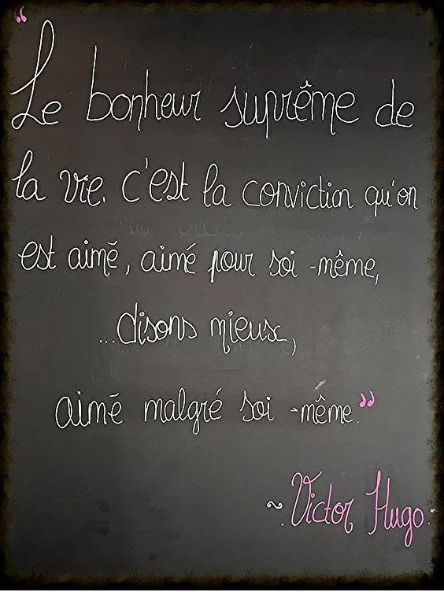

Le bonheur d’être aimé
Le suprême bonheur
de la vie,
N’est pas l’éclat
d’un jour qui luit,
Ni la gloire,
ni les promesses,
Mais la douceur
d’une tendresse.
C’est de savoir,
au fond de soi,
Qu’un cœur demeure
auprès de toi ;
Un cœur qui t’aime
sans mesure,
Au-delà même
de tes blessures.
Aimé pour soi,
sans apparence,
Sans masque,
sans autre exigence ;
Aimé quand l’ombre
prend ta voix,
Quand tu ne sais plus
croire en toi.
Mieux encore :
aimé malgré soi,
Malgré ses doutes,
ses faux pas ;
Quand on se fuit,
quand on se perd,
Quand on se juge
avec colère.
Car être aimé
malgré ses failles,
C’est voir s’ouvrir
une muraille ;
Et dans les bras
d’un autre cœur,
Retrouver enfin
sa propre valeur.
Alors le monde
peut bien s’effacer,
Les lendemains
peuvent trembler :
Il reste
cette certitude,
Plus forte
que toute solitude :
Le suprême bonheur
de la vie,
C’est la conviction,
infinie,
Qu’on est aimé —
aimé pour soi-même,
Et mieux encore :
aimé quand même.
Djamel Metref
At Yenni le 27 Août 2026 
← Tous les poèmes
Le bonheur d’être aimé
Amour et désir · Liens humains